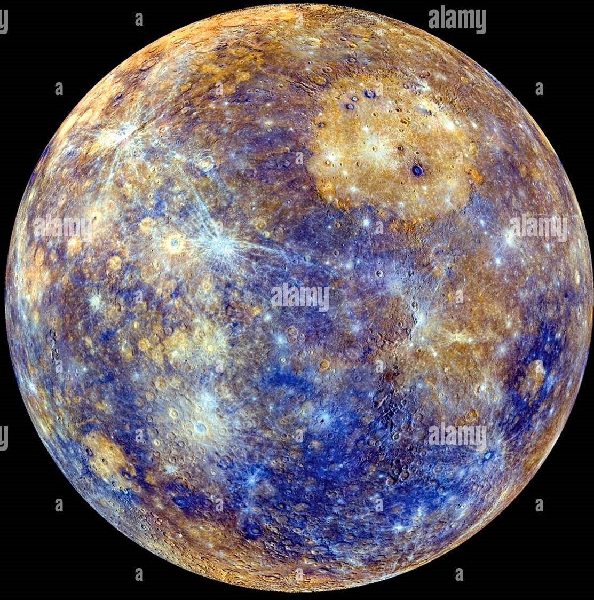
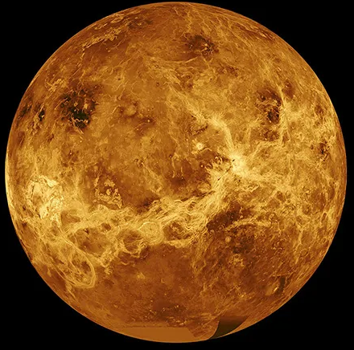
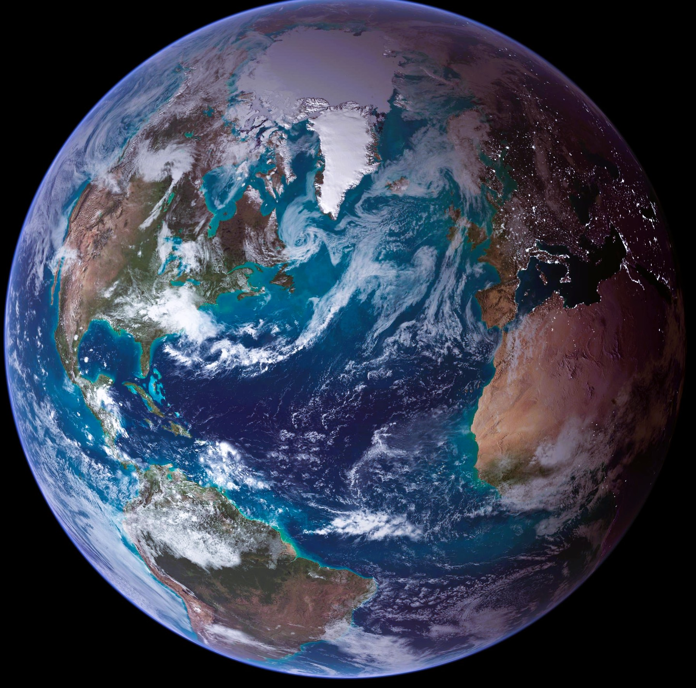
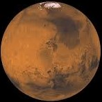
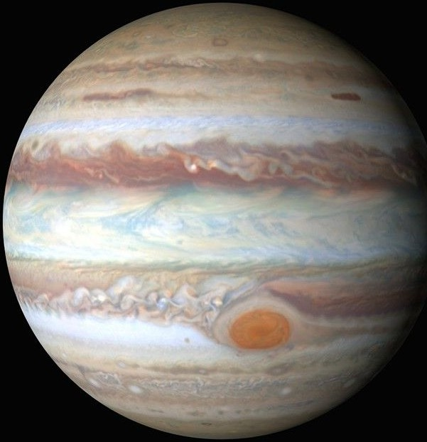
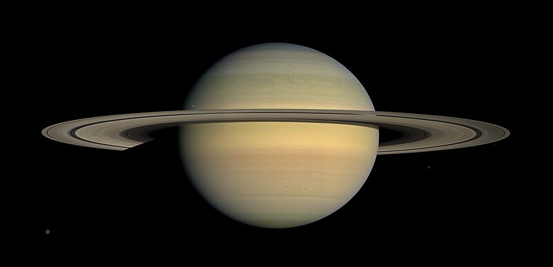
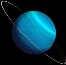
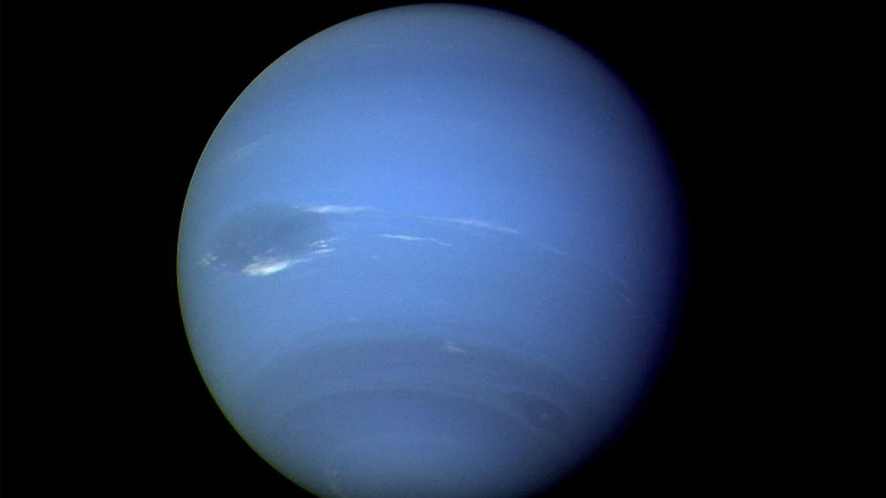
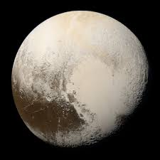

| Category | Name | Image | Mass (1024kg) | Diameter (km) | Density (kg/m3) | Gravity (m/s2) | Length of day (hours) | Distance from Sun (106km) | Mean temperature (°C) | Number of moons | Notes |
|---|---|---|---|---|---|---|---|---|---|---|---|
| Terrestial planets | Mercury |  |
0.330 | 4,879 | 5427 | 3.7 | 4222.6 | 57.9 | 167 | 0 | Closest to the sun |
| Venus |  |
4.87 | 12,104 | 5243 | 8.9 | 2802.0 | 108.2 | 464 | 0 | ||
| Earth |  |
5.97 | 12,756 | 5514 | 9.8 | 24.0 | 149.6 | 15 | 1 | Our world | |
| Mars |  |
0.642 | 6,792 | 3933 | 3.7 | 24.7 | 227.9 | -65 | 2 | The red planet |
| Jovian planets data | ||||||||||||
| Category | Name | Image | Mass (1024kg) | Diameter (km) | Density(kg/m3) | Gravity (m/s²) | Length of day (hours) | Distance from Sun (106km) | Mean temperature (°C) | Number of moons | Notes | |
|---|---|---|---|---|---|---|---|---|---|---|---|---|
| Jovian planets | Gas giants | Jupiter |  |
1898 | 142,984 | 1326 | 23.1 | 9.9 | 778.6 | -110 | 67 | The largest planet |
| Saturn |  |
568 | 120,536 | 687 | 9.0 | 10.7 | 1433.5 | -140 | 62 | |||
| Ice giants | Uranus |  |
86.8 | 51,118 | 1271 | 8.7 | 17.2 | 2872.5 | -195 | 27 | ||
| Neptune |  |
102 | 49,528 | 1638 | 11.0 | 16.1 | 4495.1 | -200 | 14 | |||
| Dwarf planets data | |||||||||||
| Category | Name | Image | Mass (1024kg) | Diameter (km) | Density (kg/m3) | Gravity (m/s2) | Length of day (hours) | Distance from Sun (106km) | Mean temperature (°C) | Number of moons | Notes |
|---|---|---|---|---|---|---|---|---|---|---|---|
| Dwarf planets | Pluto |  |
0.0146 | 2,370 | 2095 | 0.7 | 153.3 | 5906.4 | -225 | 5 | Declassified as a planet in 2006, but this remains controversial |